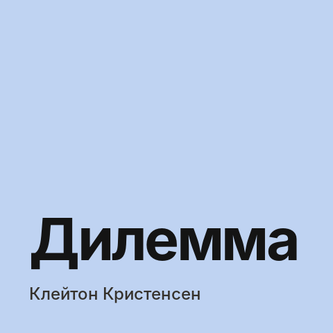

«На крючке» Нира Эяля: как продукты становятся привычкой
Тезисы из книги о продуктах, которыми пользуются по привычке, без рекламы и напоминаний: из каких четырёх шагов складывается привычка и где проходит граница с манипуляцией.
Нир Эяль много лет работал на стыке психологии, технологий и бизнеса. В книге он описывает модель Hook — цикл, через который пользователь проходит снова и снова, пока продукт не становится частью его дня.
Модель Hook: четыре шага
- Триггер. Сначала внешний — уведомление, письмо, кнопка. Со временем его заменяет внутренний: скука, тревога, желание с кем-то поговорить.
- Действие. Самое простое поведение в ожидании награды. Оно происходит, когда совпадают мотивация, способность и триггер, поэтому каждый лишний шаг снижает шанс действия.
- Переменное вознаграждение. Награда, которую нельзя точно предсказать, удерживает сильнее. Эяль выделяет три вида: социальное (одобрение других), «охота» (новая информация, находки) и личное (мастерство, завершённость).
- Вложение. Пользователь что-то вкладывает в продукт — данные, контент, подписчиков, настройки, репутацию. Это делает продукт ценнее для него и заряжает следующий триггер.
Когда привычка возможна
Привычка формируется, если продуктом пользуются часто и он ощутимо полезен. Редкое, но очень полезное действие тоже может стать привычкой, но это сложнее.
Этика
Эяль предлагает матрицу: стал бы автор сам пользоваться продуктом и улучшает ли продукт жизнь людей. Если да и да — вы «помощник». Если продукт не улучшает жизнь, но вы им пользуетесь — «развлекатель». Если улучшает, но вы им не пользуетесь — «продавец». Если ни то, ни другое — «дилер».
Что взять продакту
Разбирать ключевой сценарий по четырём шагам: какой внутренний триггер мы обслуживаем, сколько шагов до действия, что меняется в награде и что пользователь оставляет в продукте, чтобы вернуться.
Кому читать
Продактам потребительских сервисов и всем, кто работает с удержанием. Читать вместе с разделом об этике — модель одинаково хорошо работает и для полезных, и для вредных продуктов.
Похожие посты
 «Вдохновлённые» Марти Кагана: главное о продакт-менеджменте
«Вдохновлённые» Марти Кагана: главное о продакт-менеджменте

«Дилемма инноватора» Клейтона Кристенсена: почему сильные компании проигрывают новичкам «Построение бизнес-моделей» Остервальдера и Пинье: бизнес-модель на одном листе
«Построение бизнес-моделей» Остервальдера и Пинье: бизнес-модель на одном листе
 «Спроси маму» Роба Фитцпатрика: как разговаривать с пользователями, чтобы они не врали
«Спроси маму» Роба Фитцпатрика: как разговаривать с пользователями, чтобы они не врали